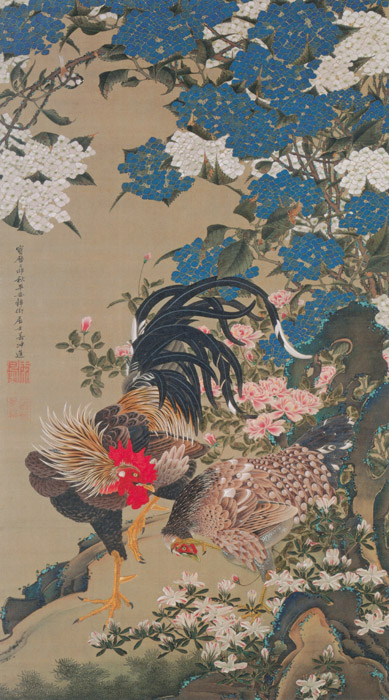

作品名 「紫陽花双鶏図」
花言葉 「冷淡」「無情」「辛抱強い愛情」「移り気」「浮気」
紫陽花
「冷淡」
紫陽花は、唐の詩人白居易が別の花,おそらくライラックに付けた名で、平安時代の学者源順がこの漢字をあてたことから誤って広まったといわれています。花言葉の「移り気」はアジサイの花色が咲き始めてから少しずつ変化すること、「冷酷」や「冷たい」は青系の花色の印象にちなむといわれます。
紫陽花双鶏図
伊藤若冲
伊藤若冲の作品『動植綵絵』（どうしょく さいえ）動植物を描いた彩色画の一つ。石のまわりに咲くアジサイ、バラ、ツツジと、片脚で立つ番のニワトリが描かれています。
| 作品名 | 紫陽花双鶏図 |
| 作者 | 伊藤若冲 |
| 制作年 | 1761年〜1765年 |
| 種類 | 絹本着色 一幅 |
| 寸法 | 142.6×79.7cm |
| 所蔵 | 宮内庁三の丸尚蔵館 |